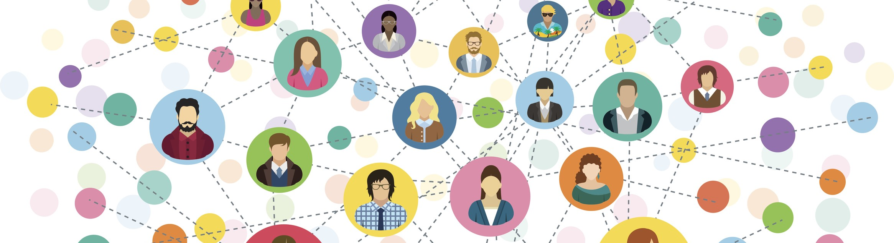

Connections
While looking at the articles on the #ImpeachmentHearings on Twitter, I also thought to myself about the various threshold concepts that could apply to the written articles on social media sites. The ones that stood out the most to me were “Writing is a Social and Rhetorical Activity”, and “Writing Represents the World, Events, Ideas and Feelings”. Adler-Kassner and Wardle note in their book “Naming What We Know” that “Writers are always doing the rhetorical work of addressing the needs and interests of a particular audience, even if unconsciously” (Adler-Kassner & Wardle, 17). Twitter is a perfect example of this idea of addressing the needs and interests of a particular audience because the success of posts is determined by the quantifiable likes and retweets generated. Thus, to ensure that the writing can generate as much views and discussion, writers on Twitter seek to make their posts shorter, more controversial, and more opinionated than forms of writing elsewhere.
Another Threshold Concept that I connected Twitter with in Naming What we know was “Writing Represents the World, Events, Ideas and Feelings”. Adler-Kassner and Wardle highlight this important aspect of writing by creating this metaphor: “I may think if I write about a mountain that the mountain is there for all to see, so the words I use are not that important. But when I realize that all my readers are likely to know of the mountain, particularly on a sunny early spring afternoon after an overnight snow storm ending in sleet so the crust breaks through unpredictably beneath the feet, is through the words I write, I begin to take greater care in choosing my words” (38). Adler-Kassner and Wardle’s choices of words in the metaphor are geared towards more descriptive writing that caters to the reader’s senses and emotions. While Twitter posts seek to do they same, they must also do so within certain character restrictions and limited space. Thus, the use of gifs and emojis come in. By using gifs and emojis to augment the original textual posts, the writer can better engage with the audience by promoting anger, fear, or the need to bring about action. These emotional engagements are widely known today as a form of “outrage culture”.